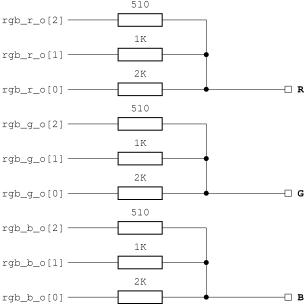
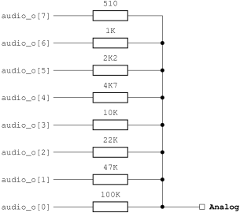

Quote
from Wikipedia article on the
Colecovision console
Content
This project recreates most of the circuits found on the original console PCB including CPU, RAM, video and sound generation.Here is a detailed list of internal components of these components:
- Z80 CPU - T80
core from opencores.org
/ fpgaarcade.com
Copyright (c) 2001-2002 Daniel Wallner (jesus at opencores.org)
Ver 300 started tidyup, MikeJ March 2005
Latest version from www.fpgaarcade.com (original www.opencores.org) - TMS992xA Video Display Processor
- SN76489AN
sound generator
- General purpose I/O for controller
- Clock generator - operates with main 10.7 MHz clock (external or PLL)
- Reset generator - requires power-on reset capability of FPGA
- BIOS RAM - 8 kByte
- CPU RAM - 1 kByte
- Video RAM - 16 kByte
- Cartridge ROM - up to 32 kByte
- RGB DACs
- Audio DAC
Console Interfaces
The external components are attached via several interfaces to the
Colecovision console:- Clock Input: Base clock of 10.7 MHz or an integer multiple.
- Reset Input: Active low external reset input.
- Controller Interface:
- Player 1 - 4-way joystick, two action buttons and keypad
support
- Player 2 - 4-way joystick, two action buttons and keypad
support
- Player 1 - 4-way joystick, two action buttons and keypad
support
- RGB Video Interface:
- 3 bit wide channels for red, green and blue video information
- Composite synchronization output
- VGA output with separate horizontal and vertical
synchronization outputs
- Audio Interface
- 8 bit digital audio sound output
- 1 bit Delta-Sigma DAC sound output
- AC97 audio stream output
- BIOS ROM Interface: Address and data buses for 8 kByte of CPU BIOS ROM
- CPU RAM Interface: Address and data buses for 1 kByte of CPU RAM
- Cartridge ROM Interface: Address and data buses for up to
32 kByte of cartridge ROM
- Video RAM Interface: Address and data buses for 16 kByte of
VRAM
Control
The Colecovision console uses a multiplexing mechanism to read out the
joystick and keypad information. Because of this, the joystick
connection requires additional glue logic.Refer to http://www.atarihq.com/danb/files/ColecoController.pdf and the Simple Solutions Zefant XS3 and JOP.design Cyclone FPGA Board implementations. The pins of both controller interfaces are named after the index numbers at the connector.
External Memory
There are two groups of external memory components. First are the CPU
related memories for BIOS, RAM and the game cartridge. Although there
are three separate interfaces for them, the CPU can access only one at
a time, thus
multiplexing is straight forward in case a single memory has to be
used. Second is the video RAM which is operated independently from the
CPU.The toplevels included in this release integrate CPU BIOS and RAM plus video RAM inside the FPGA while the cartridge ROM is located on the board. Both designs use external RAM chips for storing cartridge information for the sake of flexibility. On the JOP.design Board, the onboard RAMA chip is used. With Zefant XS3, SRAM1 of the optional SRAM-SODIMM holds the cartridge data.
RGB Video
In the simplest approach, the digital information for the three RGB
channels have to be converted
to analog voltages by three DAC circuits, each of them consists of
simple resitors. Such DACs were built for the JOP.design board. See the
following figure for a proposal on how to build them.
The better approach is to use a professional DAC circuit like found on the Zefant Mini-ITX board. This one offers a VGA interface to a standard PC monitor. Three video DAC channels can be fed with 8-bit wide color information each. The drawback is that the simple RGB video information has to be brushed up to suit the VGA standard. A scan doubler is used here to double the pixel rate towards the VGA monitor although the VDP inside the console core still outputs RGB video signals.
The better approach is to use a professional DAC circuit like found on the Zefant Mini-ITX board. This one offers a VGA interface to a standard PC monitor. Three video DAC channels can be fed with 8-bit wide color information each. The drawback is that the simple RGB video information has to be brushed up to suit the VGA standard. A scan doubler is used here to double the pixel rate towards the VGA monitor although the VDP inside the console core still outputs RGB video signals.
Digital Audio
The digital audio information is supplied via an 8 bit wide signed
vector ranging from -128 to 127 (as defined in numeric_std package). It
depends on the DAC implementation on your board whether this value can
be used as it is or some post processing is needed. On the JOP board, I
use two DAC implementations in parallel. First is a DAC built with
resistors. This requires to add an offset of 128
to the signed value to obtain positive audio data. Refer to the
following
picture for the discrete DAC.
Next is a delta-sigma DAC implementation. This one requires a minimum number of external components but adds some logic in the FPGA. For a detailed discussion of delta-sigma DACs refer to Xilinx' application note XAPP154. The external circuit is shown in the next figure.

Please keep in mind that the output of these circuits can reach the
full VCCIO level of the FPGA device. Make sure to match the level to
the requirements of the following input.Next is a delta-sigma DAC implementation. This one requires a minimum number of external components but adds some logic in the FPGA. For a detailed discussion of delta-sigma DACs refer to Xilinx' application note XAPP154. The external circuit is shown in the next figure.
Again, the Zefant Mini-ITX board provides a professional solution here as well. It contains an AC97 compatible codec chip that handles all the audio stuff. You "simply" have to supply an AC97 audio stream. Fortunately, the AC97 controller core from opencores.org has proven to be versatile enough to allow ad-hoc generation of such a stream. All required design instances are included in the project release.
Clock Generation
All clocks in the system are derived from a single 10.738635 MHz clock. In general, the frequency has not to be fully accurate - approximately 10.7 MHz is sufficient. In case the on board PLL cannot generate this frequency, the clk_en_10m7_i input can be used to gate clk_i. clk_en_10m7_i qualifies the rising edges of clk_i that form the 10.7 MHz clock.Power-on Reset Module
The power-on reset module incv_por.vhd
uses device specific features to generate a reset signal upon power-on
(or start of operation after device configuration). Consult the
documentation of the FPGA device family on how to implement such
functionality.Resource Usage
Following is the flow summary for an Altera Cyclone device:+------------------------------------------------------------------------+
; Flow
Summary
;
+-------------------------+----------------------------------------------+
; Flow
Status
; Successful - Wed Mar 01 22:33:20
2006 ;
; Quartus II Version ; 5.0 Build 168
06/22/2005 SP 1 SJ Web Edition ;
; Revision
Name ;
jop_cv
;
; Top-level Entity Name ;
jop_cv
;
;
Family
;
Cyclone
;
;
Device
;
EP1C12Q240C8
;
; Timing
Models ;
Final
;
; Met timing requirements ;
Yes
;
; Total logic elements ; 3,217 / 12,060 ( 26 %
)
;
; Total
pins
; 139 / 173 ( 80 %
)
;
; Total virtual pins ;
0
;
; Total memory bits ; 204,800 /
239,616 ( 85 %
)
;
; Total
PLLs
; 1 / 2 ( 50 %
)
;
+-------------------------+----------------------------------------------+
Fitting results for a Spartan3 1000 (XC3S1000FG456):
Please note that this design contains additional logic for the AC97 controller and additional RAM for the scan doubler.
Logic Utilization:
Total Number Slice Registers: 1,055 out
of 15,360 6%
Number used as Flip
Flops:
1,054
Number used as
Latches:
1
Number of 4 input
LUTs: 3,478
out of 15,360 22%
Logic Distribution:
Number of occupied
Slices:
2,149 out of 7,680 27%
Number of Slices containing only related
logic: 2,149 out of 2,149 100%
Number of Slices containing unrelated
logic: 0 out
of 2,149 0%
*See NOTES below for an explanation of
the effects of unrelated logic
Total Number 4 input
LUTs: 3,684 out
of 15,360 23%
Number used as
logic:
3,478
Number used as a
route-thru: 76
Number used for Dual Port RAMs: 128
(Two LUTs used per Dual Port RAM)
Number used as Shift
registers: 2
Number of bonded
IOBs:
255 out of 333 76%
IOB Flip
Flops:
50
Number of Block
RAMs:
15 out of 24 62%
Number of
GCLKs:
3 out of 8 37%
Number of
DCMs:
1 out of 4 25%
Total equivalent gate count for design: 1,030,301Legal Issues
Redistribution and use in source and synthesized forms, with or without modification, are permitted provided that the following conditions are met:Redistributions of source code must retain the above copyright notice, this list of conditions and the following disclaimer.
Redistributions in synthesized form must reproduce the above copyright notice, this list of conditions and the following disclaimer in the documentation and/or other materials provided with the distribution.
Neither the name of the author nor the names of other contributors may be used to endorse or promote products derived from this software without specific prior written permission.
THIS SOFTWARE IS PROVIDED BY THE COPYRIGHT HOLDERS AND CONTRIBUTORS "AS IS" AND ANY EXPRESS OR IMPLIED WARRANTIES, INCLUDING, BUT NOT LIMITED TO, THE IMPLIED WARRANTIES OF MERCHANTABILITY AND FITNESS FOR A PARTICULAR PURPOSE ARE DISCLAIMED. IN NO EVENT SHALL THE AUTHOR OR CONTRIBUTORS BE LIABLE FOR ANY DIRECT, INDIRECT, INCIDENTAL, SPECIAL, EXEMPLARY, OR CONSEQUENTIAL DAMAGES (INCLUDING, BUT NOT LIMITED TO, PROCUREMENT OF SUBSTITUTE GOODS OR SERVICES; LOSS OF USE, DATA, OR PROFITS; OR BUSINESS INTERRUPTION) HOWEVER CAUSED AND ON ANY THEORY OF LIABILITY, WHETHER IN CONTRACT, STRICT LIABILITY, OR TORT (INCLUDING NEGLIGENCE OR OTHERWISE) ARISING IN ANY WAY OUT OF THE USE OF THIS SOFTWARE, EVEN IF ADVISED OF THE POSSIBILITY OF SUCH DAMAGE.
See also the file COPYING.
Please note:
The copyright of the ROM images is owned by third parties, thus the above does not apply to them. You have to be entitled separately to use the ROM images together with the FPGA Colecovision design. Owning an original Colecovision console and the cartridges might be ok, but I am not liable for any copyright violations that arise from your use of the FPGA Colecovision design.
I will ignore any requests for a copy of the ROM images.
References
Colecovision:- Dan Boris' schematics of the Colecovision board
http://www.atarihq.com/danb/files/colecovision.pdf - Schematics of the Colecovision controller, same source
http://www.atarihq.com/danb/files/ColecoController.pdf - Technical information, same source
http://www.atarihq.com/danb/files/CV-Tech.txt
- TI Data book TMS9918.pdf
http://www.bitsavers.org/pdf/ti/_dataBooks/TMS9918.pdf - Sean Young's tech article
http://bifi.msxnet.org/msxnet/tech/tms9918a.txt - Paul Urbanus' discussion of the timing details
http://bifi.msxnet.org/msxnet/tech/tmsposting.txt - Richard F. Drushel's article series
"This Week With My Coleco ADAM"
http://junior.apk.net/~drushel/pub/coleco/twwmca/index.html
- TI Data sheet SN76489.pdf
ftp://ftp.whtech.com/datasheets%20&%20manuals/SN76489.pdf - John Kortink's article on the SN76489
http://web.inter.nl.net/users/J.Kortink/home/articles/sn76489/ - Maxim's "SN76489 notes" in
http://www.smspower.org/maxim/docs/SN76489.txt
--
Arnim Läuger
<arnim.laeuger at gmx.net>